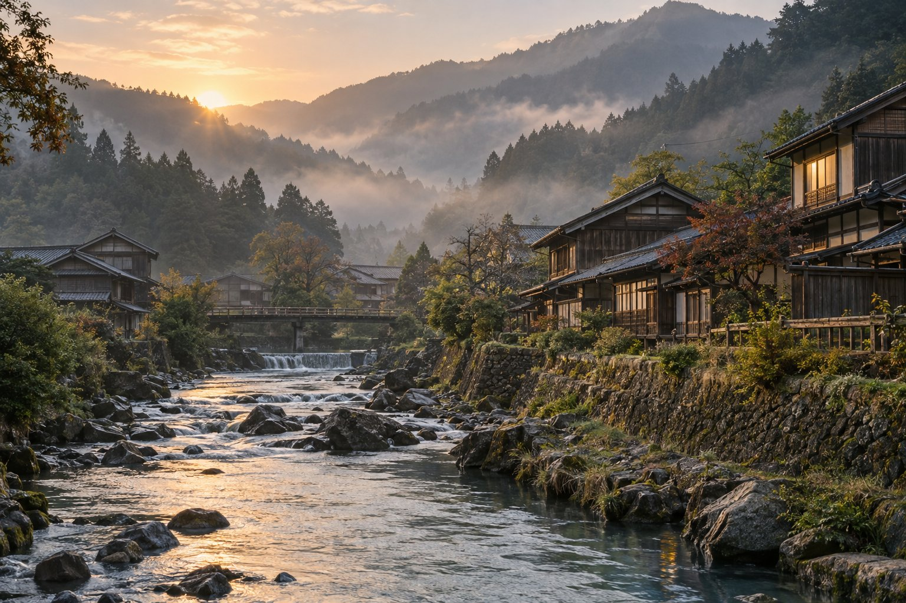

Zwischen Bergen und Dörfern
Kleine Wege, grüne Täler und Raum zum Durchatmen. Für alle, die Japan abseits des großen Trubels erleben möchten.
Diese Idee vormerken ↗JAPAN, IN IHREM TEMPO
Individuelle Japanreisen, mit Zeit für das Wesentliche.
Ihre Reise beginnt hier ↗
A DIFFERENT KIND OF JOURNEY01 / THE ART OF SLOW TRAVEL
Ein stiller Garten. Eine kleine Gasse. Ein Gespräch, das bleibt. Eine besondere Reise beginnt mit dem, was Ihnen wichtig ist.
AKARI ist ein fiktives Konzept für persönliche Japanreisen: mit Raum für Kultur, Natur und die Freiheit, unterwegs auch einmal länger zu bleiben.
02 / FIND YOUR JAPAN
Drei Ideen als Ausgangspunkt für Ihre Reise. Keine buchbaren Angebote.
Kleine Wege, grüne Täler und Raum zum Durchatmen. Für alle, die Japan abseits des großen Trubels erleben möchten.
Diese Idee vormerken ↗
Gärten, Handwerk und die leisen Rituale des Alltags. Für eine Reise, die genauer hinsieht.
Diese Idee vormerken ↗
Inselblicke, Hafenorte und ein langsamerer Rhythmus. Für Tage, an denen weniger auf dem Programm stehen darf.
Diese Idee vormerken ↗03 / MADE AROUND YOU
Wann möchten Sie reisen? Was interessiert Sie? Ihre Wünsche geben die Richtung vor.
Route, Reisetempo und Begleitung werden im Gespräch aufeinander abgestimmt.
Vor einer Buchung werden Leistungen, Verfügbarkeit und Kosten persönlich geklärt.
04 / BEFORE YOU GO
Nein. Diese Website ist ein fiktiver Gestaltungsentwurf. Das Formular zeigt nur eine lokale Vorschau Ihrer Reisewünsche. Es werden keine Anfragen versendet.
Nein. Bilder sind KI-generierte Stimmungsbilder, die Reiseideen sind Beispiele. Konkrete Orte, Leistungen und Verfügbarkeiten werden erst für die echte Website festgelegt.
Deutsch und Englisch. Die Texte sind Entwürfe und noch nicht unabhängig muttersprachlich geprüft.
LET'S MAKE IT YOURS
Ein paar Gedanken genügen für den ersten Schritt.
Ihre Reise beginnt hier ↗